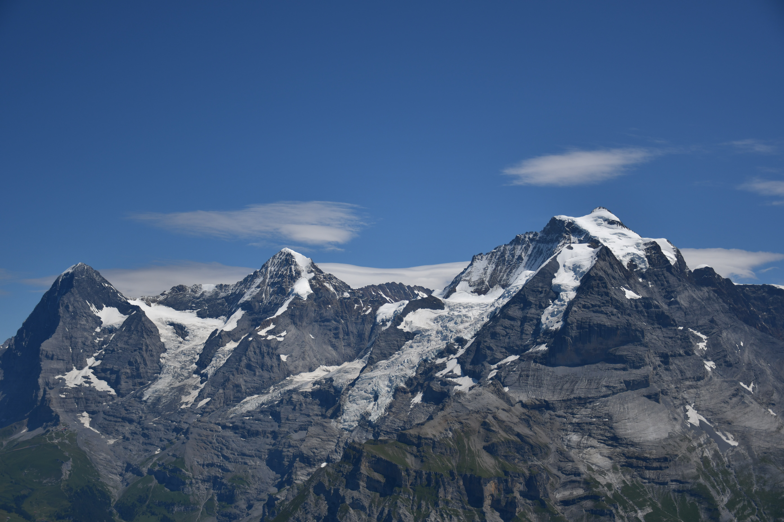

스위스 최초, 세계 2번째로 전기를 사용한 톱니 궤도 철도로 1898년 개통했다.
체르마트에서 산악 열차를 타고 고르너그라트 정상에 도착하면 경이로운 파노라마와 만나게 된다.
스위스 알프스의 상징인 마테호른, 4,000m가 넘는 29개의 봉우리들과 빙하가 눈앞에 펼쳐진다.
그리고 기차 길과 작은 호수, 산악 마을을 따라 난 오래된 길을 걷는 특별한 여정을 경험할 수 있다.
👉🏻빙하 특급
'세상에서 가장 느린 특급 열차'로 불리며 스위스를 대표하는 파노라마 철도 루트이다.
열차는 체르마트와 생모리츠사이에 있는 7개의 커다란 골짜기들을 따라 약 8시간, 291km를 달린다. 그리고 오베르알프 고개를 넘고, 291개 다리, 91개의 터널을 통과한다.
👉🏻융프라우

아름다운 설경으로 잘 알려진 알프스 산맥의 고봉으로,
융프라우의 하이라이트는 융프라우와 묀히 두 봉우리 사이에 위치한 융프라우요흐 전망대이다. 명물 톱니바퀴 열차로 오를 수 있어 고산 지대의 짜릿한 풍경을 감상할 수 있다.
유럽 최정상에서 식사할 수 있는 레스토랑과 반짝이는 눈 속의 얼음 궁전, 유럽에서 가장 긴 빙하인 알레치 빙하 등이 눈길을 사로잡는다. 알레치 빙하의 일부인 융프라우 설원에서는 스키나 스노보드 등 다양한 스포츠를 즐길 수 있다.